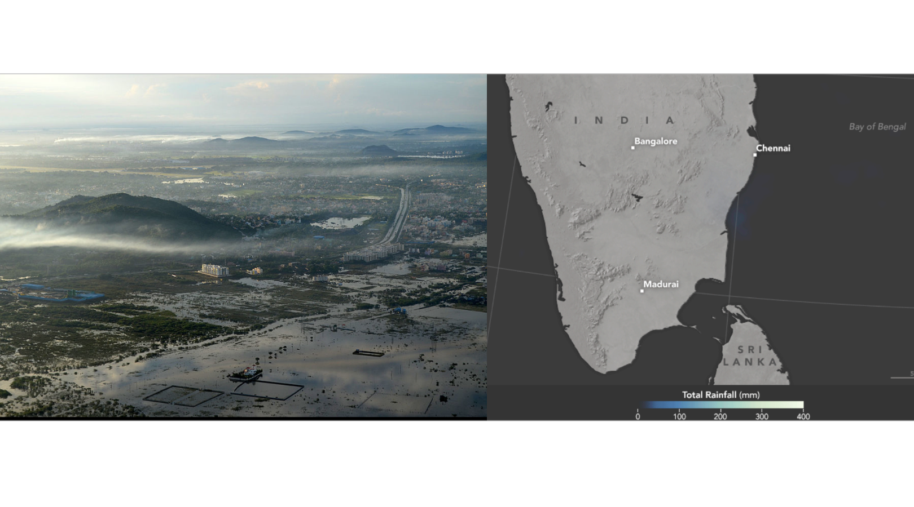
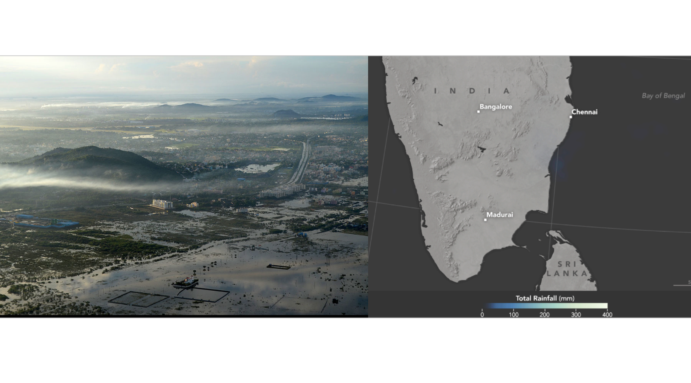
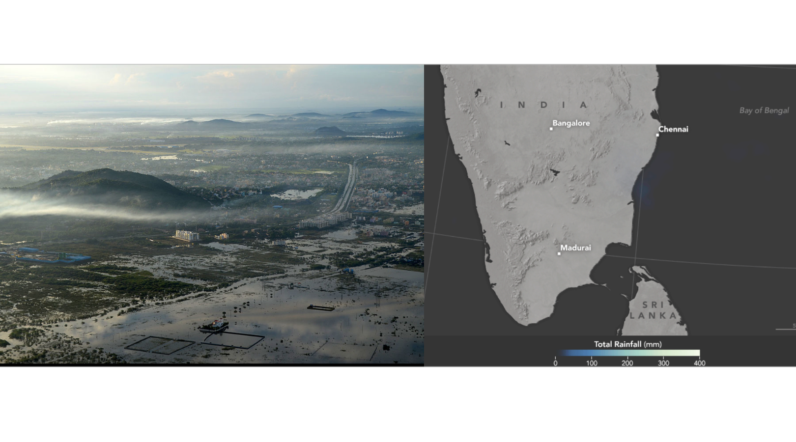
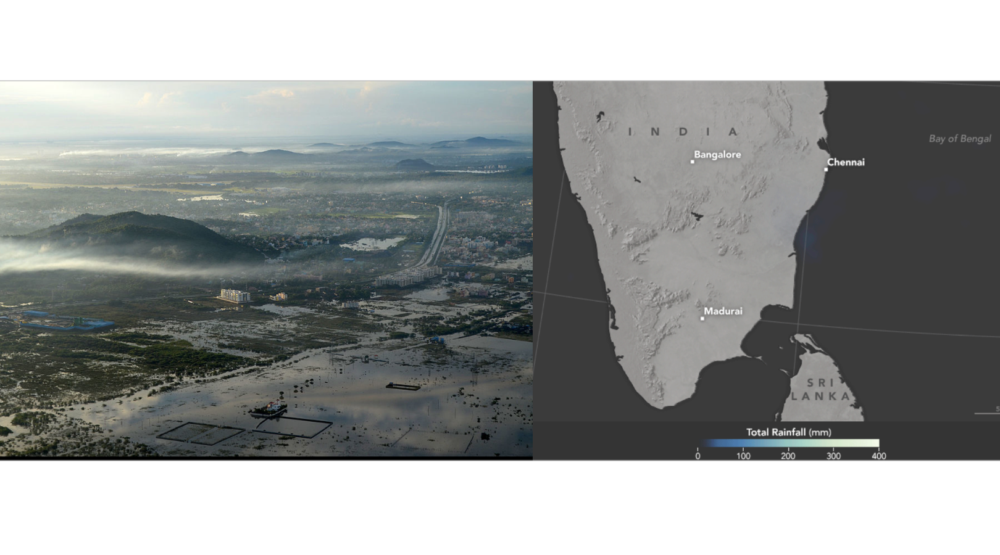

This project - supported by TATA Center for Technolgy and Design at MIT - is focused on urban hazzards vulnarablity of Indian cities. Currently in the development mode for city of Chennai, this platform will gather confirmed flood reports from social media and messaging platforms which are then added to a publically available map helping to inform communities about the flood situation in real-time. This platform will feed the crowd-sourced data to Emergency Managment Cell of the Chennai Municipal corporation through a custom built REM (Risk Evaluation Metrix).
Chennai, the capital city of the state of Tamil Nadu, is located in the southeastern India on the shores of the Bay of Bengal. The northeast monsoon season occurring from October to December accounts for 40 to 60 per cent of the annual rainfall in Chennai. With its low elevation coastal zone, inadequate provision for storm water runoff, and unregulated growth over wetlands, the city is prone to heavy flooding during monsoon seasons. In addition, the eastern coast of India is susceptible to cyclonic activity and concentrated heavy rainfall events. In December 2015, severe rainfall led to flooding across the entire coast from Chennai to Cuddalore. With estimates of damages and losses ranging from nearly $3 billion to over $15 billion, and 500 casualties, these floods were one of the costliest natural disasters the city had witnessed, exposing a critical need for providing real-time geospatial data to disaster managers for organizing rescue and relief operations.
The aim of this research is to implement the concept of ‘people as sensors’ during disasters – people collecting information to aid in the recovery process and posting this information for broad dissemination outside of the established traditional channels of emergency response. Social media today is extensively used for emotional support, sharing and receiving information about relief funds, shelter, food, and staying safe during natural disasters. This project, initiated by the Urban Risk Lab, will develop a web based platform to collect, process, and analyze real-time crowd-sourced disaster related data and disseminate it to disaster management agency as well as general public.
This platform will actively engage with citizens via different social media like Facebook, Telegram, Twitter, and conventional text messages to collect real-time flood reports, which will be then verified, and visualized on an interactive map platform. This web-map of flood zones can then be used by the government for planning rescue operations, as well as by the citizens, to make decisions about where to evacuate from and which areas to avoid during flooding. We are also exploring ways to integrate helpline as data sources to be added to the platform in the near future. On successful launch of this platform in Chennai, the platform can be swiftly scaled to other flood prone areas in India like Bangalore, Mumbai, and Bhubaneswar.
MIT TATA center of Technology and Design